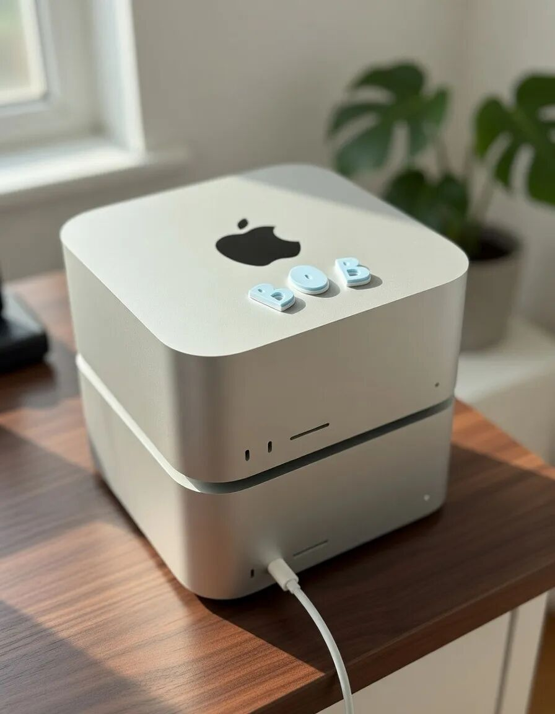

2026 年 2 月 28 日。
Jaroslav Beck 发了一条消息。
他宣布：
彻底取消所有云端 LLM 订阅。
所有主力 AI 工作，迁移到本地小型集群。
这不是普通开发者。
他是
Beat Saber 创始人之一。
后来公司被
Meta 收购。
现在是 AI 创业公司 BottleCapAI 的创始人。
这意味着——
他不是情绪化极客。
而是一个真正算过账的人。
⸻
一、发生了什么？
两台 Mac Studio。
贴着“Bob”标签。
一个小型本地集群。
运行全部核心 AI 工作流。
他自己都说：
这完全不在我 2026 Q1 的 bingo card 上。
意思是——
连他自己都没想到，转变来得这么快。
⸻
二、他为什么这么做？
他给了两个原因。
1）安全与控制权
所有数据留在本地。
自己选择模型。
不上传到云端。
他特别强调：
隐私问题不只是“训练数据会不会被用”。
还有更多直接影响业务的因素。
（他暗示未来会展开讲。）
这其实是一个趋势信号。
不是“我怕泄露”。
而是“我不想被系统默认规则管理”。
去云化，本质是控制权回流。
⸻
2）token 成本
这是更现实的一刀。
他之前在云端消耗的 token 费用非常高。
而现在——
本地模型成本低到：
几个月就能回本两台机器。
这句话很重。
如果一个已经成功退出的创业者都开始算 token 账。
说明这件事已经进入“经营问题”阶段。
⸻
三、他在用什么模型？
主力是：
MiniMax 的 MiniMax-M2.5（2 月 12 日发布）。
亮点：
• SWE-Bench Verified：80.2%
• 接近甚至部分跑法超过 Anthropic 的 Claude Opus 4.6
• coding / agent / 搜索 / 办公任务表现强
• 成本约为前沿闭源模型的 1/60–1/100
重负载任务则交给：
Moonshot AI 的 Kimi 2.5。
并且——
他正在做多模型并行架构：
• 小模型 → 快速响应
• 专用 coding 模型
• 专用 research 模型
• 负载分流
这其实已经不是“玩模型”。
而是开始做本地 AI 基础设施。
⸻
四、社区在发生什么？
几件有意思的现象：
• Austen Allred 直接追问模型选择
• Jason Calacanis 表示“Same”
• 很多人晒 M3/M4 Ultra 512GB RAM 配置
• “Bob”标签成了梗
• 讨论点集中在：
• session 管理
• 上下文丢失
• 是否需要再买一台
• 无 nanny-filter 的自由度
一个新词被反复提到：
去云化运动。
⸻
五、这件事真正的意义
这不是“云会消失”。
而是结构在变。
过去三年：
云端模型 = 能力
本地模型 = 玩具
现在正在变成：
云端模型 = 前沿能力
本地模型 = 日常生产力主力
当本地模型足够强，
而成本低到可以规模化部署时——
决策权开始重新分配。
对个人创作者来说是控制权。
对创业者来说是成本结构。
对开发者来说是自由度。
⸻
六、真正的问题
这是不是一个个例？
还是 2026 年的拐点？
如果：
• 中国开源模型持续逼近前沿闭源模型
• 本地硬件持续升级（M5 1TB RAM 已被他点名等待）
• 多模型架构成为常态
那么云端订阅制的商业模型，会不会被压缩？
这不是情绪判断。
是结构判断。
⸻
最后一行记录
2026 年 2 月。
第一批“退出云端”的核心创业者开始出现。
执行可以外包。
控制权正在回流。
⸻